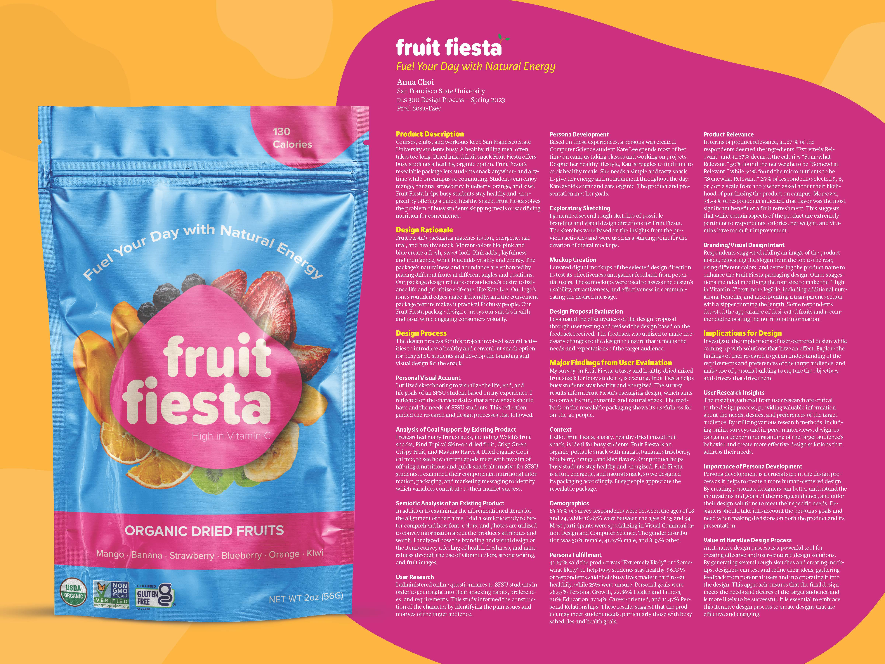
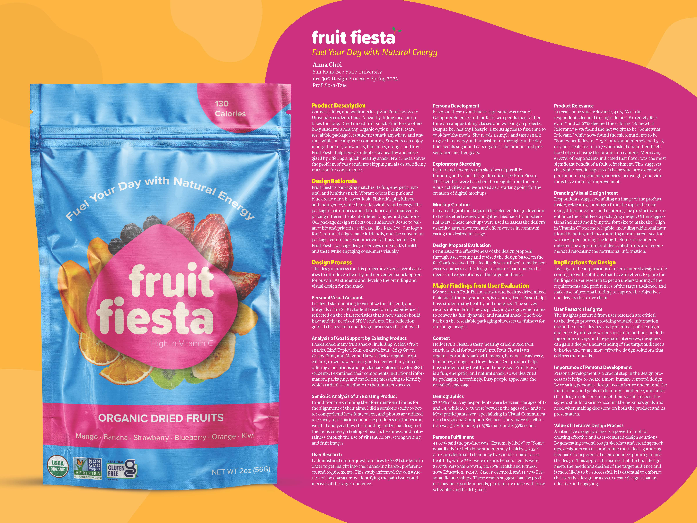

Project 5
 

Description
The Fruit Fiesta artwork is a vibrant and playful representation of the brand's nutritious and delicious dried mixed fruit snack. The design features a lively blend of blue and pink hues, with organic shapes that evoke the freshness and natural essence of the fruits. The artwork captures the fun and energetic spirit of the product, appealing to busy students seeking a convenient and healthy snack option. The colorful fruit illustrations and inviting typography create a visually engaging experience, making Fruit Fiesta a delightful and eye-catching choice for health-conscious consumers.
The Fruit Fiesta poster showcases a vibrant, engaging, and informative design that highlights a nutritious dried mixed fruit snack tailored to the busy student lifestyle. The poster's background features a lively blend of yellow and pink, with organic shapes that represent the brand's identity, emphasizing its fresh and natural qualities. The layout effectively presents survey results, process descriptions, and implications for design, illustrating a comprehensive understanding of the target audience and a user-centered approach to the design process. The survey results in the section demonstrate the product's relevance to students, particularly those with busy schedules and health-focused goals. This data provides valuable insights into the packaging design, emphasizing its practicality and convenience for on-the-go individuals. The process descriptions outline the various stages of research, persona development, exploratory sketching, mockup creation, and design evaluation, showcasing a well-rounded approach to designing a solution that caters to the needs of San Francisco State University students. Finally, the implications for design emphasize the importance of user research insights, persona development, and the value of an iterative design process. These factors contribute to the creation of a successful, user-centered product, ensuring that Fruit Fiesta not only meets the nutritional needs of busy students but also presents an appealing and engaging experience.